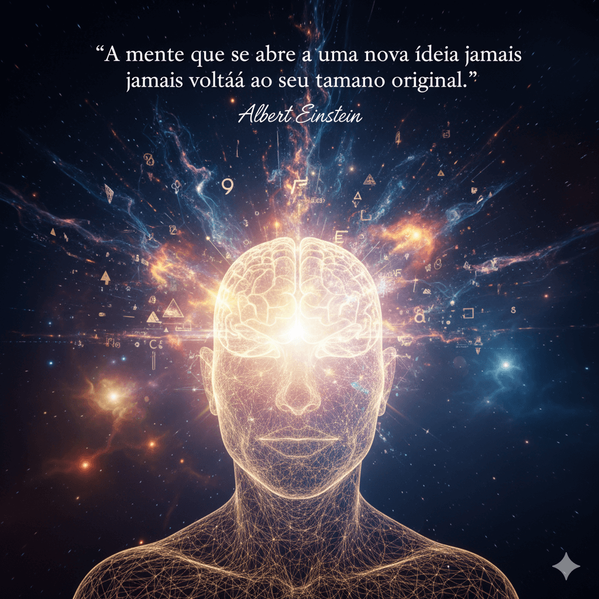
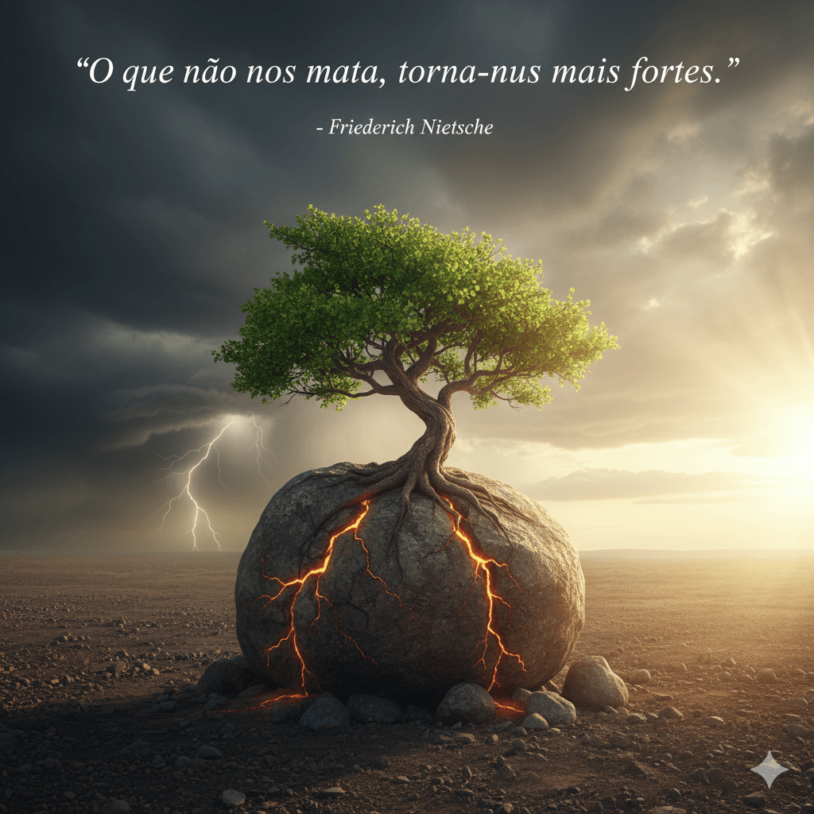
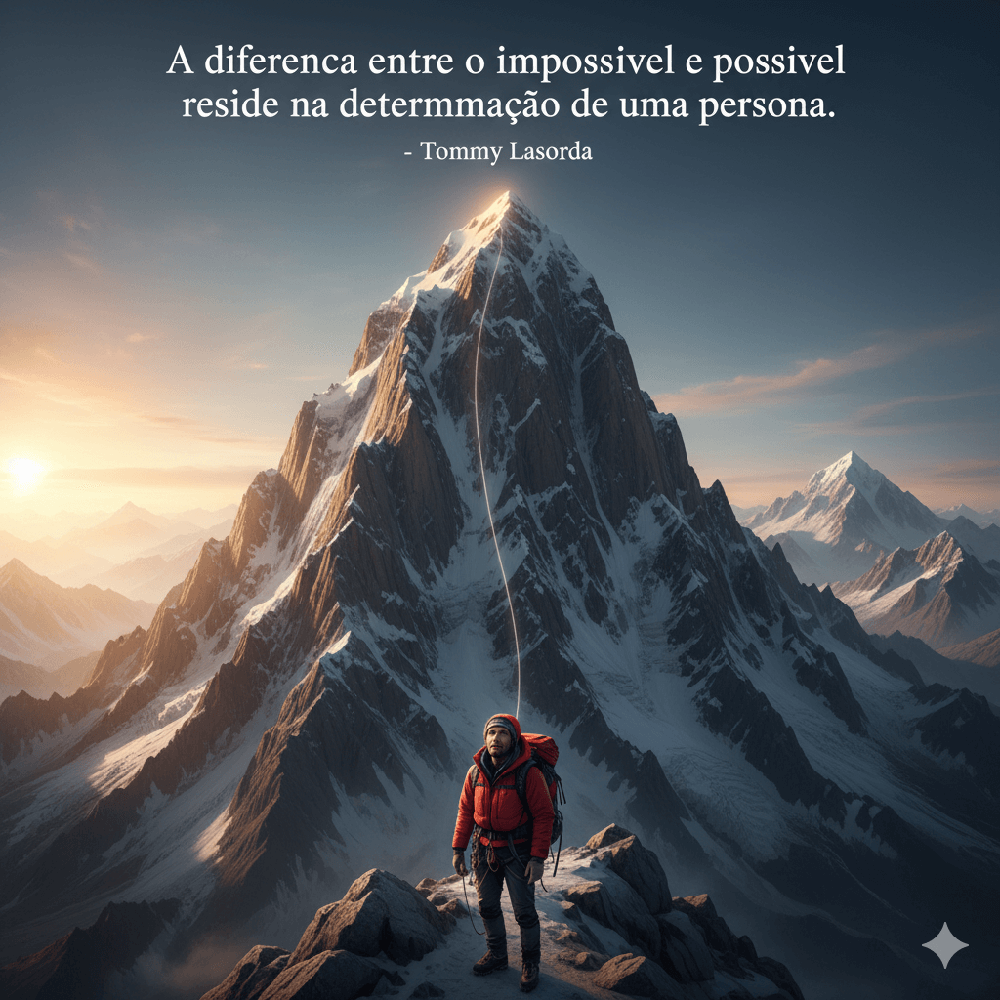

10 Citações Inspiradoras e Seus Significados
1. Citação de Eleanor Roosevelt
O futuro pertence àqueles que acreditam na beleza de seus sonhos.
Significado: Esta citação enfatiza a importância da visão, esperança e otimismo. Sugere que para alcançar o sucesso ou realizar grandes feitos (o "futuro"), é fundamental ter a capacidade de sonhar alto e manter a fé nesses objetivos, mesmo que pareçam difíceis ou distantes no presente. O futuro não é algo passivo, mas sim moldado pela nossa crença e ação inspirada nos nossos sonhos.

2. Citação de Steve Jobs
A única forma de fazer um excelente trabalho é amar o que você faz.
Significado: Jobs destaca que a paixão é o motor da excelência. Apenas o comprometimento e o esforço não são suficientes para atingir um alto nível de qualidade; o trabalho se torna verdadeiramente notável (excelente) apenas quando a pessoa encontra alegria e propósito no que está fazendo.

3. Citação de Albert Einstein
Não tentes ser uma pessoa de sucesso. Tenta ser uma pessoa de valor.
Significado: Einstein sugere uma mudança de foco de metas externas (sucesso, fama, dinheiro) para metas internas (caráter, contribuição, ética). Ser uma "pessoa de valor" significa contribuir positivamente para o mundo e para a vida dos outros. O sucesso, quando vem, deve ser uma consequência natural do valor que se agrega, e não o objetivo final em si.
4. Citação de Albert Einstein
A mente que se abre a uma nova ideia jamais voltará ao seu tamanho original.
Significado: É uma celebração do aprendizado contínuo e da curiosidade. Uma vez que somos expostos a um novo conceito, perspectiva ou conhecimento, nossa forma de pensar é permanentemente alterada. Essa nova ideia expande nossa capacidade de compreensão e nossa visão de mundo de maneira irreversível.

5. Citação de Friedrich Nietzsche
O que não nos mata, torna-nos mais fortes.
Significado: Essa frase expressa a ideia de resiliência e crescimento através da adversidade. Experiências traumáticas ou muito difíceis (aquilo que "não nos mata") acabam por desenvolver em nós uma força interior, novas habilidades de enfrentamento e uma maior resistência para futuros desafios.

6. Citação de Tommy Lasorda
A diferença entre o impossível e o possível reside na determinação de uma pessoa.
Significado: Enfatiza o poder da vontade e da persistência. O que a maioria das pessoas rotula como "impossível" é frequentemente apenas um obstáculo que pode ser superado por alguém com foco inabalável e teimosia positiva. A determinação é o fator de mudança entre a limitação percebida e a conquista.

7. Citação de Milton Berle
Se a oportunidade não bater, construa uma porta.
Significado: Esta citação é um chamado à proatividade e à ação. Em vez de esperar passivamente por uma chance (a "oportunidade bater"), devemos ser empreendedores e criar nossas próprias oportunidades. É uma lição sobre iniciativa e sobre não depender da sorte ou de terceiros.
8. Citação de Napoleon Hill
Não espere. O tempo nunca será 'exatamente certo'.
Significado: Aborda o problema da procrastinação e da busca por condições perfeitas. Hill argumenta que nunca haverá um momento em que todas as variáveis estarão alinhadas perfeitamente para iniciar um projeto. A chave é começar agora, com as ferramentas e circunstâncias que se tem, em vez de adiar a ação.
9. Citação de Henry Ford
Quando tudo parecer ir contra você, lembre-se que o avião decola contra o vento, não a favor dele.
Significado: Uma metáfora poderosa sobre enfrentamento e superação. Os momentos de maior resistência, crítica ou dificuldade (o "vento contra") não devem ser vistos como barreiras, mas sim como a força necessária para nos impulsionar a novos patamares ("decolar").
10. Citação de Sócrates
Conhece-te a ti mesmo.
Significado: Esta é a base da filosofia socrática. Significa a importância da autoconsciência e da introspecção. Antes de tentar entender o mundo ou dar conselhos aos outros, devemos primeiro entender nossos próprios valores, motivações, fraquezas e talentos. É um pré-requisito para uma vida virtuosa e significativa.